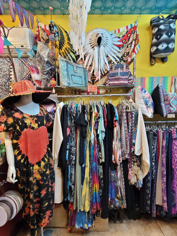
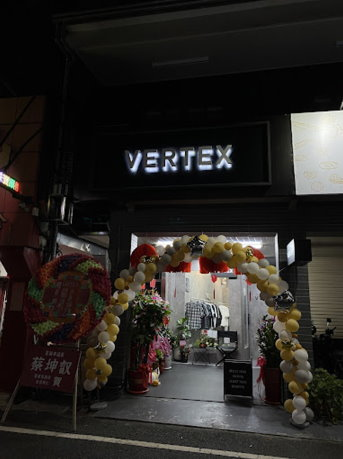

| 7BK異國服飾 |VERTEX SELECT| ANAURAEST 嘉義男裝/ART韓國服飾/嘉義服飾店 | |
7BK異國服飾 |
|
|  | 位於嘉義東區的【7BK異國服飾】，是一間充滿民族感的特色服飾小店，風格十分獨特，品項也非常多元，非常適合想要體驗異國風、民族風，或是想跳脫流行穿搭風格的朋友們來店裡選購。一踏進店內，親切的闆娘會非常熱情的與您打招呼，就像朋友一樣，不會讓您尷尬或是有被推銷的感覺，而闆娘也會根據您的需求或是穿衣的風格，替您介紹不同衣服的材質與特別的地方，過程中若有自己的問題或是想法，只要提出，闆娘都會給您最專業的穿搭建議。【7BK異國服飾】的衣服都是由闆娘親自從泰國批貨回來，再加以製作，7BK有部分服飾是有染色的，而染色部分也是由闆娘親手製作，每一件的都有各自的特色，在材質上也經過嚴格的篩選，每一件服飾的布料彷彿羽毛般的柔順，讓您不僅可以穿出屬於自己的風格，更能夠穿得舒適。【7BK異國服飾】非常的平價，給您最高的CP值，店內的氛圍十分的舒適自在，在這裡挑選衣服會讓您忍不住多買很多件衣服呢！歡迎各位想挑戰不同的穿衣風格，或是想要體驗異國服飾的朋友們來店選購 |
|  | HABIT SELECT成立於2017年，以男裝、配件、居家生活商品為主，使用木頭及植栽做為整間店的主體架構，創造一個自在、舒適的購物空間。商品結合了台、日、港及韓等國家品牌，選貨部分以Urban Outdoor、時裝、工藝等三大方向為選貨主軸，希望透過店內的品牌、商品讓更多人了解品牌故事及服裝本身。現在從打理自己開始，藉由穿著來表達對生活的態度，這就是我們所希望存在的價值，希望HABIT也能成為您生活中的一種習慣。我們樂於尋找不同國家及小眾的品牌，喜愛每個服裝品牌背後的故事及歷史，HABIT堅信在物質及資訊不斷充裕的現代，實體店鋪始終是不可或缺的一環，希望客人能夠實際到現場體驗及了解這些商品，並享受逛街的樂趣，我們用純真簡樸的做法，也用更多的細節與服務熱情，讓客人能體會到小店的溫度，如果您也樂於找尋極小眾的商品，相信HABIT是您相當好的選擇!top |
ANAURAEST 嘉義男裝/ART韓國服飾/嘉義服飾店 |
|
 |
週末快樂日系少年 這套酷滴很！ boxy短寬版型的條紋襯衫泡泡紗線材質不易起皺 搭大寬摺的桶弧形造型棉褲加上懶人領帶及枯葉造型滑板帽整套帥的日系賣場商品韓國直購回台全館實品拍攝質料版型親自挑選品質保證.商品質料版型親自挑選,價格親人品質保證請安心購買。 因為自己喜歡韓國服飾喜歡嘗試不同風格所以想和大家一起分享,做自己穿自己喜歡的樣子top |